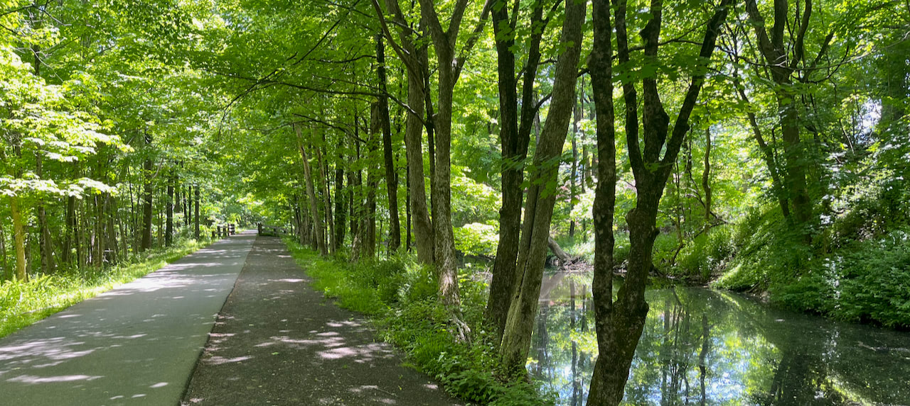
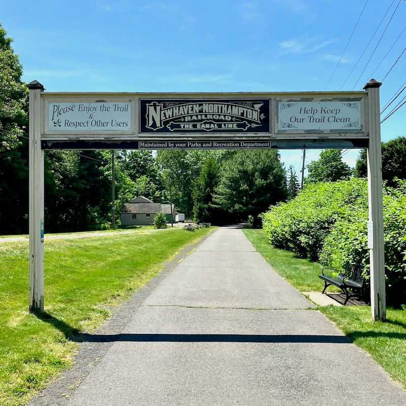

Farmington Canal Heritage Trail
May 25, 2024 • 23.3 miles
My main task at work this week, leading up to the long holiday weekend, was creating a client website “from scratch.” Or at least, that’s how it initially felt. I’m less than two months into this job, and creating whole web sites was implied to be one of those responsibilities I would grow into over the long term. So it was daunting to have a week or so to get this done, along with all my other day to day tasks that are more like fixing websites.
But everything is built on the shoulders of giants, or whatever that expression is. The designer at the company created mockups for every page and designated the fonts and colors. One of the lead developers on my team had just finished a basic website skeleton that covers a bunch of template code and structure. The client only really needed a few marketing pages and templates for blog posts. Once I actually started, building on the work done by everyone before me, it came easily.
The Farmington Canal was dug in the 1820s to create a waterway from New Haven all the way through Connecticut and into Massachusetts. And then, standing on the shoulders of that giant undertaking, the New Haven and Northampton Railroad was built along its right of way in the 1840s and 50s. The railroad was much more effective at moving goods through the state; for one, it didn’t freeze in the winter. But it wouldn’t have been as easy to do if it wasn’t for the canal already there.
Just as the railroad supplanted the canal, cars and, uh, other railroad lines eventually made the New Haven and Northampton Railroad irrelevant. The line was out of use by the 1970s, and by 2000 it had been paved over and turned into the Farmington Canal Heritage Trail. Once again, on the shoulders of the giants that came before it.
Some sections of the trail are still under construction, such as north of Southington to the MA border (according to one sign, opening the next day), or south from Yale’s campus to the harbor. Everything in between is glassy-smooth asphalt along the remnants of the canal and/or a collection of rivers and brooks, isolated from car traffic the whole way. It was so pleasant and so easy. Dozens of people were out walking or riding their bikes, many with dogs, two others on longboards. The warehouses and other industrial buildings on either side of the former tracks are now microbreweries and gastropubs. One was a wellness clinic with sandwich boards promoting laser hair removal and semaglutide injections. Not the same as public infrastructure, but probably still standing on the shoulders of some other giant, in its own way.